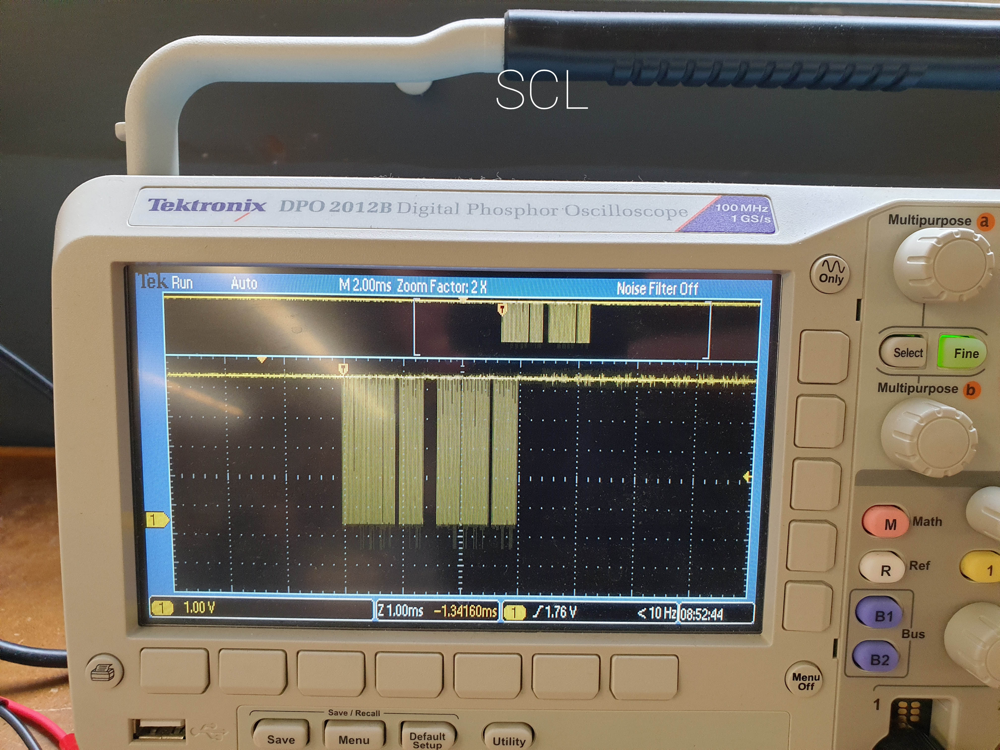
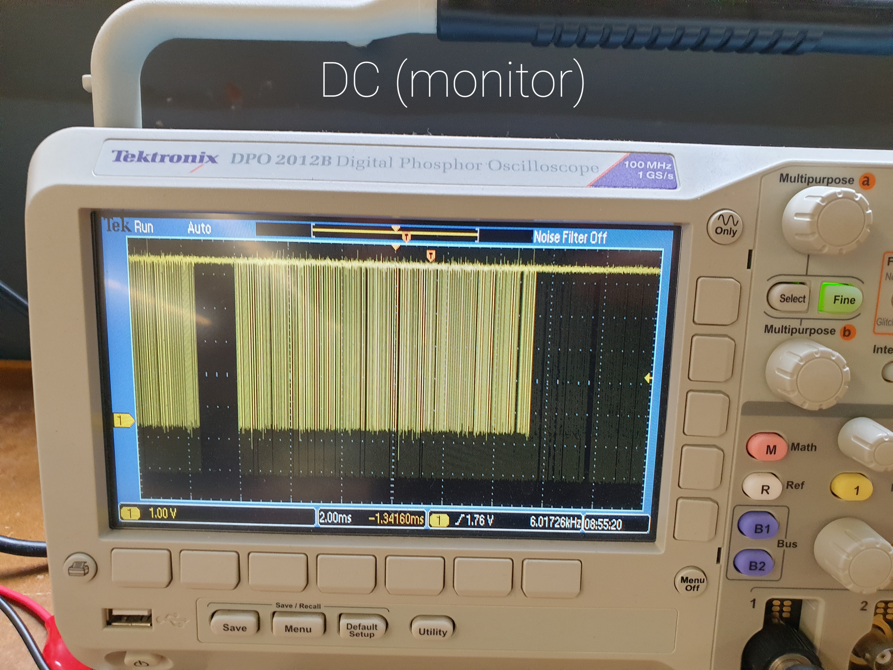

#This week’s first assignment
For my first assignment I had to code a program that would make use of both an input and an output device. I also had to make sure the output device was nothing I’ve used before and that my program would use object-oriented programming. Therefore, I decided to use the [Adafruit LIS3DH Triple-Axis accelerometer](https://learn.adafruit.com/adafruit-lis3dh-triple-axis-accelerometer-breakout/arduino) and the [Adafruit 1.14" 240x135 Color TFT LCD Display](https://learn.adafruit.com/adafruit-1-14-240x135-color-tft-breakout). I was hoping to create a program that would display a message on the tiny screen whenever the accelerometer is moved on the X or Y axis.
##Wiring
For starters, I knew I had to wire both devices to the arduino UNO microcontroller. I followed both tutorials that I linked above, but was at first afraid that there wouldn’t be enough good pins to wire both devices. Fortunately, I had the option to use the accelerometer's I2C or SPI wiring options. I decided to go with the first as it did not need to use any of the digital pins (which were already required for the display), only the SCL and SDA pins. The reason why I was restricted in using certain pins for each device was because the libraries I used for both allowed very little flexibility in the pins that would be used. Regardless, as you can see below, this was the final wiring of the accelerometer and display. I made sure to add large extension wires between the microcontroller and the accelerometer’s breadboard to make sure there is enough space for movement.
<div class = "flex-center-full-size">
<img src="./Images_Week_7/20221014_183954.jpg">
</div>
##Libraries
My biggest learning curve definitely came from the implementation of the required libraries, as I had to make sure to install them and also use them as intended. I used snippets from the arduino IDE built-in examples of code to set up the libraries (some were meant for the accelerometer and some for the display). Fortunately, the libraries were not interfering with one another, and below you can see the setup code I included in the final program (it's a lot).
<pre>
<font color="#5e6d03">#include</font> <font color="#434f54">&lt;</font><font color="#d35400">Wire</font><font color="#434f54">.</font><font color="#000000">h</font><font color="#434f54">&gt;</font>
<font color="#5e6d03">#include</font> <font color="#434f54">&lt;</font><b><font color="#d35400">SPI</font></b><font color="#434f54">.</font><font color="#000000">h</font><font color="#434f54">&gt;</font>
<font color="#5e6d03">#include</font> <font color="#434f54">&lt;</font><font color="#000000">Adafruit_LIS3DH</font><font color="#434f54">.</font><font color="#000000">h</font><font color="#434f54">&gt;</font>
<font color="#5e6d03">#include</font> <font color="#434f54">&lt;</font><font color="#000000">Adafruit_Sensor</font><font color="#434f54">.</font><font color="#000000">h</font><font color="#434f54">&gt;</font>
<font color="#5e6d03">#include</font> <font color="#434f54">&lt;</font><font color="#000000">Adafruit_GFX</font><font color="#434f54">.</font><font color="#000000">h</font><font color="#434f54">&gt;</font> &nbsp;&nbsp;&nbsp;<font color="#434f54">&#47;&#47; Core graphics library</font>
<font color="#5e6d03">#include</font> <font color="#434f54">&lt;</font><font color="#000000">Adafruit_ST7735</font><font color="#434f54">.</font><font color="#000000">h</font><font color="#434f54">&gt;</font> <font color="#434f54">&#47;&#47; Hardware-specific library for ST7735</font>
<font color="#5e6d03">#include</font> <font color="#434f54">&lt;</font><font color="#000000">Adafruit_ST7789</font><font color="#434f54">.</font><font color="#000000">h</font><font color="#434f54">&gt;</font> <font color="#434f54">&#47;&#47; Hardware-specific library for ST7789</font>
<font color="#434f54">&#47;&#47; Used for software SPI</font>
<font color="#5e6d03">#define</font> <font color="#000000">LIS3DH_CLK</font> <font color="#000000">13</font>
<font color="#5e6d03">#define</font> <font color="#000000">LIS3DH_MISO</font> <font color="#000000">12</font>
<font color="#5e6d03">#define</font> <font color="#000000">LIS3DH_MOSI</font> <font color="#000000">11</font>
<font color="#434f54">&#47;&#47; Used for hardware &amp; software SPI</font>
<font color="#5e6d03">#define</font> <font color="#000000">LIS3DH_CS</font> <font color="#000000">10</font>
<font color="#5e6d03">#if</font> <font color="#000000">defined</font><font color="#000000">(</font><font color="#000000">ARDUINO_FEATHER_ESP32</font><font color="#000000">)</font> <font color="#434f54">&#47;&#47; Feather Huzzah32</font>
&nbsp;<font color="#5e6d03">#define</font> <font color="#000000">TFT_CS</font> &nbsp;&nbsp;&nbsp;&nbsp;&nbsp;&nbsp;&nbsp;&nbsp;<font color="#000000">14</font>
&nbsp;<font color="#5e6d03">#define</font> <font color="#000000">TFT_RST</font> &nbsp;&nbsp;&nbsp;&nbsp;&nbsp;&nbsp;&nbsp;<font color="#000000">15</font>
&nbsp;<font color="#5e6d03">#define</font> <font color="#000000">TFT_DC</font> &nbsp;&nbsp;&nbsp;&nbsp;&nbsp;&nbsp;&nbsp;&nbsp;<font color="#000000">32</font>
<font color="#5e6d03">#elif</font> <font color="#000000">defined</font><font color="#000000">(</font><font color="#000000">ESP8266</font><font color="#000000">)</font>
&nbsp;<font color="#5e6d03">#define</font> <font color="#000000">TFT_CS</font> &nbsp;&nbsp;&nbsp;&nbsp;&nbsp;&nbsp;&nbsp;&nbsp;<font color="#000000">4</font>
&nbsp;<font color="#5e6d03">#define</font> <font color="#000000">TFT_RST</font> &nbsp;&nbsp;&nbsp;&nbsp;&nbsp;&nbsp;&nbsp;<font color="#000000">16</font> &nbsp;&nbsp;&nbsp;&nbsp;&nbsp;&nbsp;&nbsp;&nbsp;&nbsp;&nbsp;&nbsp;&nbsp;&nbsp;&nbsp;&nbsp;&nbsp;&nbsp;&nbsp;&nbsp;&nbsp;&nbsp;&nbsp;&nbsp;&nbsp;&nbsp;&nbsp;&nbsp;&nbsp;&nbsp;&nbsp;&nbsp;&nbsp;&nbsp;&nbsp;&nbsp;&nbsp;&nbsp;&nbsp;&nbsp;&nbsp;&nbsp;&nbsp;&nbsp;
&nbsp;<font color="#5e6d03">#define</font> <font color="#000000">TFT_DC</font> &nbsp;&nbsp;&nbsp;&nbsp;&nbsp;&nbsp;&nbsp;&nbsp;<font color="#000000">5</font>
<font color="#5e6d03">#else</font>
&nbsp;<font color="#434f54">&#47;&#47; For the breakout board, you can use any 2 or 3 pins.</font>
&nbsp;<font color="#434f54">&#47;&#47; These pins will also work for the 1.8&#34; TFT shield.</font>
&nbsp;<font color="#5e6d03">#define</font> <font color="#000000">TFT_CS</font> &nbsp;&nbsp;&nbsp;&nbsp;&nbsp;&nbsp;&nbsp;<font color="#000000">10</font>
&nbsp;<font color="#5e6d03">#define</font> <font color="#000000">TFT_RST</font> &nbsp;&nbsp;&nbsp;&nbsp;&nbsp;&nbsp;&nbsp;<font color="#000000">9</font> <font color="#434f54">&#47;&#47; Or set to -1 and connect to Arduino RESET pin</font>
&nbsp;<font color="#5e6d03">#define</font> <font color="#000000">TFT_DC</font> &nbsp;&nbsp;&nbsp;&nbsp;&nbsp;&nbsp;&nbsp;&nbsp;<font color="#000000">8</font>
<font color="#5e6d03">#endif</font>
<font color="#434f54">&#47;&#47; I2C</font>
<font color="#000000">Adafruit_LIS3DH</font> <font color="#000000">lis</font> <font color="#434f54">=</font> <font color="#000000">Adafruit_LIS3DH</font><font color="#000000">(</font><font color="#000000">)</font><font color="#000000">;</font>
<font color="#434f54">&#47;&#47; For 1.14&#34;, 1.3&#34;, 1.54&#34;, 1.69&#34;, and 2.0&#34; TFT with ST7789:</font>
<font color="#000000">Adafruit_ST7789</font> <font color="#000000">tft</font> <font color="#434f54">=</font> <font color="#000000">Adafruit_ST7789</font><font color="#000000">(</font><font color="#000000">TFT_CS</font><font color="#434f54">,</font> <font color="#000000">TFT_DC</font><font color="#434f54">,</font> <font color="#000000">TFT_RST</font><font color="#000000">)</font><font color="#000000">;</font>
</pre>
(...)
<pre>
<font color="#00979c">void</font> <font color="#5e6d03">setup</font><font color="#000000">(</font><font color="#000000">)</font> <font color="#000000">{</font>
&nbsp;<b><font color="#d35400">Serial</font></b><font color="#434f54">.</font><font color="#d35400">begin</font><font color="#000000">(</font><font color="#000000">115200</font><font color="#000000">)</font><font color="#000000">;</font>
&nbsp;<font color="#5e6d03">while</font> <font color="#000000">(</font><font color="#434f54">!</font><b><font color="#d35400">Serial</font></b><font color="#000000">)</font> <font color="#d35400">delay</font><font color="#000000">(</font><font color="#000000">10</font><font color="#000000">)</font><font color="#000000">;</font> &nbsp;&nbsp;&nbsp;&nbsp;<font color="#434f54">&#47;&#47; will pause Zero, Leonardo, etc until serial console opens</font>
&nbsp;<b><font color="#d35400">Serial</font></b><font color="#434f54">.</font><font color="#d35400">println</font><font color="#000000">(</font><font color="#005c5f">&#34;LIS3DH test!&#34;</font><font color="#000000">)</font><font color="#000000">;</font>
&nbsp;<font color="#5e6d03">if</font> <font color="#000000">(</font><font color="#434f54">!</font> <font color="#000000">lis</font><font color="#434f54">.</font><font color="#d35400">begin</font><font color="#000000">(</font><font color="#000000">0x18</font><font color="#000000">)</font><font color="#000000">)</font> <font color="#000000">{</font> &nbsp;&nbsp;<font color="#434f54">&#47;&#47; change this to 0x19 for alternative i2c address</font>
&nbsp;&nbsp;&nbsp;<b><font color="#d35400">Serial</font></b><font color="#434f54">.</font><font color="#d35400">println</font><font color="#000000">(</font><font color="#005c5f">&#34;Couldnt start&#34;</font><font color="#000000">)</font><font color="#000000">;</font>
&nbsp;&nbsp;&nbsp;<font color="#5e6d03">while</font> <font color="#000000">(</font><font color="#000000">1</font><font color="#000000">)</font> <font color="#d35400">yield</font><font color="#000000">(</font><font color="#000000">)</font><font color="#000000">;</font>
&nbsp;<font color="#000000">}</font>
&nbsp;<b><font color="#d35400">Serial</font></b><font color="#434f54">.</font><font color="#d35400">println</font><font color="#000000">(</font><font color="#005c5f">&#34;LIS3DH found!&#34;</font><font color="#000000">)</font><font color="#000000">;</font>
&nbsp;<font color="#434f54">&#47;&#47; lis.setRange(LIS3DH_RANGE_4_G); &nbsp;&nbsp;&#47;&#47; 2, 4, 8 or 16 G!</font>
&nbsp;<b><font color="#d35400">Serial</font></b><font color="#434f54">.</font><font color="#d35400">print</font><font color="#000000">(</font><font color="#005c5f">&#34;Range = &#34;</font><font color="#000000">)</font><font color="#000000">;</font> <b><font color="#d35400">Serial</font></b><font color="#434f54">.</font><font color="#d35400">print</font><font color="#000000">(</font><font color="#000000">2</font> <font color="#434f54">&lt;&lt;</font> <font color="#000000">lis</font><font color="#434f54">.</font><font color="#000000">getRange</font><font color="#000000">(</font><font color="#000000">)</font><font color="#000000">)</font><font color="#000000">;</font>
&nbsp;<b><font color="#d35400">Serial</font></b><font color="#434f54">.</font><font color="#d35400">println</font><font color="#000000">(</font><font color="#005c5f">&#34;G&#34;</font><font color="#000000">)</font><font color="#000000">;</font>
&nbsp;<font color="#434f54">&#47;&#47; lis.setDataRate(LIS3DH_DATARATE_50_HZ);</font>
&nbsp;<b><font color="#d35400">Serial</font></b><font color="#434f54">.</font><font color="#d35400">print</font><font color="#000000">(</font><font color="#005c5f">&#34;Data rate set to: &#34;</font><font color="#000000">)</font><font color="#000000">;</font>
&nbsp;<font color="#5e6d03">switch</font> <font color="#000000">(</font><font color="#000000">lis</font><font color="#434f54">.</font><font color="#000000">getDataRate</font><font color="#000000">(</font><font color="#000000">)</font><font color="#000000">)</font> <font color="#000000">{</font>
&nbsp;&nbsp;&nbsp;<font color="#5e6d03">case</font> <font color="#000000">LIS3DH_DATARATE_1_HZ</font><font color="#434f54">:</font> <b><font color="#d35400">Serial</font></b><font color="#434f54">.</font><font color="#d35400">println</font><font color="#000000">(</font><font color="#005c5f">&#34;1 Hz&#34;</font><font color="#000000">)</font><font color="#000000">;</font> <font color="#5e6d03">break</font><font color="#000000">;</font>
&nbsp;&nbsp;&nbsp;<font color="#5e6d03">case</font> <font color="#000000">LIS3DH_DATARATE_10_HZ</font><font color="#434f54">:</font> <b><font color="#d35400">Serial</font></b><font color="#434f54">.</font><font color="#d35400">println</font><font color="#000000">(</font><font color="#005c5f">&#34;10 Hz&#34;</font><font color="#000000">)</font><font color="#000000">;</font> <font color="#5e6d03">break</font><font color="#000000">;</font>
&nbsp;&nbsp;&nbsp;<font color="#5e6d03">case</font> <font color="#000000">LIS3DH_DATARATE_25_HZ</font><font color="#434f54">:</font> <b><font color="#d35400">Serial</font></b><font color="#434f54">.</font><font color="#d35400">println</font><font color="#000000">(</font><font color="#005c5f">&#34;25 Hz&#34;</font><font color="#000000">)</font><font color="#000000">;</font> <font color="#5e6d03">break</font><font color="#000000">;</font>
&nbsp;&nbsp;&nbsp;<font color="#5e6d03">case</font> <font color="#000000">LIS3DH_DATARATE_50_HZ</font><font color="#434f54">:</font> <b><font color="#d35400">Serial</font></b><font color="#434f54">.</font><font color="#d35400">println</font><font color="#000000">(</font><font color="#005c5f">&#34;50 Hz&#34;</font><font color="#000000">)</font><font color="#000000">;</font> <font color="#5e6d03">break</font><font color="#000000">;</font>
&nbsp;&nbsp;&nbsp;<font color="#5e6d03">case</font> <font color="#000000">LIS3DH_DATARATE_100_HZ</font><font color="#434f54">:</font> <b><font color="#d35400">Serial</font></b><font color="#434f54">.</font><font color="#d35400">println</font><font color="#000000">(</font><font color="#005c5f">&#34;100 Hz&#34;</font><font color="#000000">)</font><font color="#000000">;</font> <font color="#5e6d03">break</font><font color="#000000">;</font>
&nbsp;&nbsp;&nbsp;<font color="#5e6d03">case</font> <font color="#000000">LIS3DH_DATARATE_200_HZ</font><font color="#434f54">:</font> <b><font color="#d35400">Serial</font></b><font color="#434f54">.</font><font color="#d35400">println</font><font color="#000000">(</font><font color="#005c5f">&#34;200 Hz&#34;</font><font color="#000000">)</font><font color="#000000">;</font> <font color="#5e6d03">break</font><font color="#000000">;</font>
&nbsp;&nbsp;&nbsp;<font color="#5e6d03">case</font> <font color="#000000">LIS3DH_DATARATE_400_HZ</font><font color="#434f54">:</font> <b><font color="#d35400">Serial</font></b><font color="#434f54">.</font><font color="#d35400">println</font><font color="#000000">(</font><font color="#005c5f">&#34;400 Hz&#34;</font><font color="#000000">)</font><font color="#000000">;</font> <font color="#5e6d03">break</font><font color="#000000">;</font>
&nbsp;&nbsp;&nbsp;<font color="#5e6d03">case</font> <font color="#000000">LIS3DH_DATARATE_POWERDOWN</font><font color="#434f54">:</font> <b><font color="#d35400">Serial</font></b><font color="#434f54">.</font><font color="#d35400">println</font><font color="#000000">(</font><font color="#005c5f">&#34;Powered Down&#34;</font><font color="#000000">)</font><font color="#000000">;</font> <font color="#5e6d03">break</font><font color="#000000">;</font>
&nbsp;&nbsp;&nbsp;<font color="#5e6d03">case</font> <font color="#000000">LIS3DH_DATARATE_LOWPOWER_5KHZ</font><font color="#434f54">:</font> <b><font color="#d35400">Serial</font></b><font color="#434f54">.</font><font color="#d35400">println</font><font color="#000000">(</font><font color="#005c5f">&#34;5 Khz Low Power&#34;</font><font color="#000000">)</font><font color="#000000">;</font> <font color="#5e6d03">break</font><font color="#000000">;</font>
&nbsp;&nbsp;&nbsp;<font color="#5e6d03">case</font> <font color="#000000">LIS3DH_DATARATE_LOWPOWER_1K6HZ</font><font color="#434f54">:</font> <b><font color="#d35400">Serial</font></b><font color="#434f54">.</font><font color="#d35400">println</font><font color="#000000">(</font><font color="#005c5f">&#34;16 Khz Low Power&#34;</font><font color="#000000">)</font><font color="#000000">;</font> <font color="#5e6d03">break</font><font color="#000000">;</font>
&nbsp;<font color="#000000">}</font>
&nbsp;
&nbsp;<b><font color="#d35400">Serial</font></b><font color="#434f54">.</font><font color="#d35400">print</font><font color="#000000">(</font><font color="#000000">F</font><font color="#000000">(</font><font color="#005c5f">&#34;Hello! ST77xx TFT Test&#34;</font><font color="#000000">)</font><font color="#000000">)</font><font color="#000000">;</font>
&nbsp;<font color="#434f54">&#47;&#47; OR use this initializer (uncomment) if using a 1.14&#34; 240x135 TFT:</font>
&nbsp;<font color="#000000">tft</font><font color="#434f54">.</font><font color="#000000">init</font><font color="#000000">(</font><font color="#000000">135</font><font color="#434f54">,</font> <font color="#000000">240</font><font color="#000000">)</font><font color="#000000">;</font> &nbsp;&nbsp;&nbsp;&nbsp;&nbsp;&nbsp;&nbsp;&nbsp;&nbsp;&nbsp;<font color="#434f54">&#47;&#47; Init ST7789 240x135</font>
<font color="#000000">}</font>
</pre>
##The actual code
Most of my time went into the main loop function of the code, in which I first find out the “threshold” value. This value is calculated only in the first second of the program running, and functions as a constant that will be used as a reference in the future iterations. This threshold, just like the values it will be compared with, represents the sum between the absolute y-axis and x-axis values of acceleration in that first second (I added them up for simplicity’s sake). I get the sensor’s values by using the documentation from the library that automatically interprets the normalized values, not the raw ones. I also declare a boolean variable named “choice” that will be assigned the return value of the object’s method.
<pre>
<font color="#00979c">void</font> <font color="#5e6d03">loop</font><font color="#000000">(</font><font color="#000000">)</font> <font color="#000000">{</font>
&nbsp;<font color="#00979c">int</font> <font color="#000000">treshold</font><font color="#000000">;</font>
&nbsp;<font color="#00979c">bool</font> <font color="#000000">choice</font><font color="#000000">;</font>
&nbsp;<font color="#5e6d03">if</font> <font color="#000000">(</font><font color="#d35400">millis</font><font color="#000000">(</font><font color="#000000">)</font> <font color="#434f54">&lt;</font> <font color="#000000">1000</font><font color="#000000">)</font><font color="#000000">{</font>
&nbsp;&nbsp;&nbsp;<font color="#000000">sensors_event_t</font> <font color="#000000">event</font><font color="#000000">;</font>
&nbsp;&nbsp;&nbsp;<font color="#000000">lis</font><font color="#434f54">.</font><font color="#000000">getEvent</font><font color="#000000">(</font><font color="#434f54">&amp;</font><font color="#000000">event</font><font color="#000000">)</font><font color="#000000">;</font>
&nbsp;&nbsp;&nbsp;<font color="#000000">treshold</font> <font color="#434f54">=</font> <font color="#d35400">abs</font><font color="#000000">(</font><font color="#000000">event</font><font color="#434f54">.</font><font color="#000000">acceleration</font><font color="#434f54">.</font><font color="#000000">x</font><font color="#000000">)</font> <font color="#434f54">+</font> <font color="#d35400">abs</font><font color="#000000">(</font><font color="#000000">event</font><font color="#434f54">.</font><font color="#000000">acceleration</font><font color="#434f54">.</font><font color="#000000">y</font><font color="#000000">)</font><font color="#000000">;</font>
&nbsp;<font color="#000000">}</font>
</pre>
The “else” statement contains the code that will run forever, every second (as it can be seen in the “while” loop at the end of the code). That code includes a if statement that checks the output of the object’s method - which outputs if the accelerometer moved or not. If the accelerometer doesn't move, the entire screen is filled with black, the “DON’T MOVE THE PLATFORM!” text is positioned in the middle, with automatic indentation, of white color, and of size 2. If it moves, a similar code runs, only this time the display shows the message <span style="color:rgb(255, 0, 0) ;">“YOU MOVED THE PLATFORM!”</span> in red.
<pre>
&nbsp;<font color="#5e6d03">else</font>
&nbsp;<font color="#000000">{</font> &nbsp;
&nbsp;<font color="#000000">Accelerator</font> <font color="#000000">accelerator1</font><font color="#000000">(</font><font color="#000000">treshold</font><font color="#000000">)</font><font color="#000000">;</font>
&nbsp;<font color="#000000">choice</font> <font color="#434f54">=</font> <font color="#000000">accelerator1</font><font color="#434f54">.</font><font color="#000000">response</font><font color="#000000">(</font><font color="#000000">)</font><font color="#000000">;</font>
&nbsp;<font color="#5e6d03">if</font> <font color="#000000">(</font><font color="#000000">choice</font> <font color="#434f54">==</font> <font color="#00979c">true</font><font color="#000000">)</font>
&nbsp;&nbsp;&nbsp;<font color="#000000">{</font>
&nbsp;&nbsp;&nbsp;<font color="#000000">tft</font><font color="#434f54">.</font><font color="#000000">fillScreen</font><font color="#000000">(</font><font color="#000000">ST77XX_BLACK</font><font color="#000000">)</font><font color="#000000">;</font>
&nbsp;&nbsp;&nbsp;<font color="#000000">tft</font><font color="#434f54">.</font><font color="#d35400">setCursor</font><font color="#000000">(</font><font color="#000000">0</font><font color="#434f54">,</font> <font color="#000000">75</font><font color="#000000">)</font><font color="#000000">;</font>
&nbsp;&nbsp;&nbsp;<font color="#000000">tft</font><font color="#434f54">.</font><font color="#000000">setTextWrap</font><font color="#000000">(</font><font color="#00979c">true</font><font color="#000000">)</font><font color="#000000">;</font>
&nbsp;&nbsp;&nbsp;<font color="#000000">tft</font><font color="#434f54">.</font><font color="#000000">setTextColor</font><font color="#000000">(</font><font color="#000000">ST77XX_RED</font><font color="#000000">)</font><font color="#000000">;</font>
&nbsp;&nbsp;&nbsp;<font color="#000000">tft</font><font color="#434f54">.</font><font color="#000000">setTextSize</font><font color="#000000">(</font><font color="#000000">2</font><font color="#000000">)</font><font color="#000000">;</font>
&nbsp;&nbsp;&nbsp;<font color="#000000">tft</font><font color="#434f54">.</font><font color="#d35400">println</font><font color="#000000">(</font><font color="#005c5f">&#34;YOU MOVED &nbsp;THE &nbsp;&nbsp;&nbsp;&nbsp;&nbsp;&nbsp;&nbsp;PLATFORM!&#34;</font><font color="#000000">)</font><font color="#000000">;</font>
&nbsp;&nbsp;&nbsp;<font color="#000000">}</font>
&nbsp;<font color="#5e6d03">else</font>
&nbsp;&nbsp;&nbsp;<font color="#000000">{</font>
&nbsp;&nbsp;&nbsp;<font color="#000000">tft</font><font color="#434f54">.</font><font color="#000000">fillScreen</font><font color="#000000">(</font><font color="#000000">ST77XX_BLACK</font><font color="#000000">)</font><font color="#000000">;</font>
&nbsp;&nbsp;&nbsp;<font color="#000000">tft</font><font color="#434f54">.</font><font color="#d35400">setCursor</font><font color="#000000">(</font><font color="#000000">0</font><font color="#434f54">,</font> <font color="#000000">75</font><font color="#000000">)</font><font color="#000000">;</font>
&nbsp;&nbsp;&nbsp;<font color="#000000">tft</font><font color="#434f54">.</font><font color="#000000">setTextWrap</font><font color="#000000">(</font><font color="#00979c">true</font><font color="#000000">)</font><font color="#000000">;</font>
&nbsp;&nbsp;&nbsp;<font color="#000000">tft</font><font color="#434f54">.</font><font color="#000000">setTextColor</font><font color="#000000">(</font><font color="#000000">ST77XX_WHITE</font><font color="#000000">)</font><font color="#000000">;</font>
&nbsp;&nbsp;&nbsp;<font color="#000000">tft</font><font color="#434f54">.</font><font color="#000000">setTextSize</font><font color="#000000">(</font><font color="#000000">2</font><font color="#000000">)</font><font color="#000000">;</font>
&nbsp;&nbsp;&nbsp;<font color="#000000">tft</font><font color="#434f54">.</font><font color="#d35400">println</font><font color="#000000">(</font><font color="#005c5f">&#34;DON&#39;T MOVE THE &nbsp;&nbsp;&nbsp;&nbsp;&nbsp;&nbsp;&nbsp;PLATFORM!&#34;</font><font color="#000000">)</font><font color="#000000">;</font>
&nbsp;&nbsp;&nbsp;<font color="#000000">}</font>
&nbsp;<font color="#000000">}</font>
&nbsp;<font color="#00979c">long</font> <font color="#00979c">int</font> <font color="#000000">now</font><font color="#000000">;</font>
&nbsp;<font color="#00979c">long</font> <font color="#00979c">int</font> <font color="#000000">prev</font><font color="#000000">;</font>
&nbsp;<font color="#000000">prev</font> <font color="#434f54">=</font> <font color="#d35400">millis</font><font color="#000000">(</font><font color="#000000">)</font><font color="#000000">;</font>
&nbsp;<font color="#000000">now</font> <font color="#434f54">=</font> <font color="#d35400">millis</font><font color="#000000">(</font><font color="#000000">)</font><font color="#000000">;</font>
&nbsp;<font color="#5e6d03">while</font> <font color="#000000">(</font><font color="#000000">now</font> <font color="#434f54">-</font> <font color="#000000">prev</font> <font color="#434f54">!=</font> <font color="#000000">1000</font><font color="#000000">)</font><font color="#000000">{</font>
&nbsp;&nbsp;&nbsp;<font color="#000000">now</font> <font color="#434f54">=</font> <font color="#d35400">millis</font><font color="#000000">(</font><font color="#000000">)</font><font color="#000000">;</font>
&nbsp;&nbsp;&nbsp;<font color="#000000">}</font>
<font color="#000000">}</font>
</pre>
###Object oriented programming
I also created a class which was doing two things: getting the threshold, comparing that to the accelerometer’s normalized incoming values, and returning a boolean that states whether those values indicated movement. Just like for the threshold value, I used the abs() function to convert the incoming values into positive (for simplicity’s sake). Before everything, I created a constructor method in the class to turn the “threshold” parameter into a class attribute.
<pre>
<font color="#00979c">class</font> <font color="#000000">Accelerator</font><font color="#000000">{</font>
&nbsp;<font color="#00979c">int</font> <font color="#000000">treshold</font><font color="#000000">;</font>
&nbsp;<font color="#00979c">public</font><font color="#434f54">:</font>
&nbsp;<font color="#000000">Accelerator</font><font color="#000000">(</font><font color="#00979c">int</font> <font color="#000000">limit</font><font color="#000000">)</font><font color="#000000">{</font>
&nbsp;&nbsp;&nbsp;<font color="#000000">treshold</font> <font color="#434f54">=</font> <font color="#000000">limit</font><font color="#000000">;</font>
&nbsp;&nbsp;&nbsp;<font color="#000000">}</font>
&nbsp;<font color="#00979c">bool</font> <font color="#000000">response</font><font color="#000000">(</font><font color="#000000">)</font><font color="#000000">{</font>
&nbsp;&nbsp;&nbsp;&nbsp;&nbsp;&nbsp;&nbsp;<font color="#00979c">int</font> <font color="#000000">x</font><font color="#000000">;</font>
&nbsp;&nbsp;&nbsp;&nbsp;&nbsp;&nbsp;&nbsp;<font color="#00979c">int</font> <font color="#000000">y</font><font color="#000000">;</font>
&nbsp;&nbsp;&nbsp;&nbsp;&nbsp;<font color="#000000">sensors_event_t</font> <font color="#000000">event</font><font color="#000000">;</font>
&nbsp;&nbsp;&nbsp;&nbsp;&nbsp;<font color="#000000">lis</font><font color="#434f54">.</font><font color="#000000">getEvent</font><font color="#000000">(</font><font color="#434f54">&amp;</font><font color="#000000">event</font><font color="#000000">)</font><font color="#000000">;</font>
&nbsp;&nbsp;&nbsp;&nbsp;&nbsp;<font color="#000000">lis</font><font color="#434f54">.</font><font color="#d35400">read</font><font color="#000000">(</font><font color="#000000">)</font><font color="#000000">;</font>
&nbsp;&nbsp;&nbsp;&nbsp;&nbsp;<font color="#000000">x</font> <font color="#434f54">=</font> <font color="#d35400">abs</font><font color="#000000">(</font><font color="#000000">event</font><font color="#434f54">.</font><font color="#000000">acceleration</font><font color="#434f54">.</font><font color="#000000">x</font><font color="#000000">)</font><font color="#000000">;</font>
&nbsp;&nbsp;&nbsp;&nbsp;&nbsp;<font color="#000000">y</font> <font color="#434f54">=</font> <font color="#d35400">abs</font><font color="#000000">(</font><font color="#000000">event</font><font color="#434f54">.</font><font color="#000000">acceleration</font><font color="#434f54">.</font><font color="#000000">y</font><font color="#000000">)</font><font color="#000000">;</font>
&nbsp;&nbsp;&nbsp;&nbsp;&nbsp;<font color="#5e6d03">if</font> <font color="#000000">(</font><font color="#000000">(</font><font color="#000000">x</font> <font color="#434f54">+</font> <font color="#000000">y</font><font color="#000000">)</font><font color="#434f54">-</font> <font color="#000000">treshold</font> <font color="#434f54">&gt;</font> <font color="#000000">0</font><font color="#000000">)</font><font color="#000000">{</font>
&nbsp;&nbsp;&nbsp;&nbsp;&nbsp;&nbsp;&nbsp;<font color="#5e6d03">return</font> <font color="#00979c">true</font><font color="#000000">;</font>
&nbsp;&nbsp;&nbsp;&nbsp;&nbsp;&nbsp;&nbsp;<font color="#000000">}</font>
&nbsp;&nbsp;&nbsp;&nbsp;&nbsp;&nbsp;<font color="#5e6d03">else</font><font color="#000000">{</font>
&nbsp;&nbsp;&nbsp;&nbsp;&nbsp;&nbsp;&nbsp;<font color="#5e6d03">return</font> <font color="#00979c">false</font><font color="#000000">;</font>
&nbsp;&nbsp;&nbsp;&nbsp;&nbsp;&nbsp;&nbsp;<font color="#000000">}</font>
&nbsp;&nbsp;&nbsp;<font color="#000000">}</font>
&nbsp;<font color="#000000">}</font><font color="#000000">;</font>
</pre>
#Oscillometer observations
When studying my circuit using the Oscillometer, I observed that the two wire pins I used for the accelerometer (the SDA and SCL) were almost identical, with a similar wave being displayed each second for both.
<div class="two-image-row">
<img src="./Images_Week_7/20221017_105543.jpg" class="half-width-image"/>

</div>
When studying the monitor, the only significant find I was able to observe was the “DC” pin from the display, which had a differently shaped wave which was recurring each second.
<div class = "flex-center-full-size">

</div>
#Final result
As you can see below, here is the final result of the program. My code is clearly not perfect, but it gets the job done.
<div class = "flex-center-full-size">
<img src="./Images_Week_7/Final_gif.gif">
</div>
#CNC milling
I decided that for the CNC milling assignment, I would attempt to mill out the mountain shape of the largest mountain peak in Romania named [“Moldoveanu”](https://en.wikipedia.org/wiki/Moldoveanu_Peak). I used a blender plug-in named [GIS](https://github.com/domlysz/BlenderGIS), which allowed me to gather the image and height data from [google maps and google earth](https://www.google.com/maps). This information was used in blender to create the 3D model.
<div class = "flex-center-full-size">
<img src="./Images_Week_7/Initial_plug-in.PNG">
</div>
After a little fine-tuning, I was able to export [this](./Images_Week_7/Largest_romanian_mountain.stl) final STL file of the mountain peak.
<div class = "flex-center-full-size">
<img src="./Images_Week_7/Final_STL.PNG">
</div>